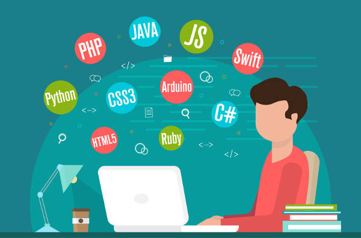

Introduction
Have you been researching how to become a programmer or how to learn programming? If so, then this article is for you!
We will look at a variety of different topics that are directly related to programming, and by the end, you should be able to answer questions like:
What does a computer programmer do?
How to learn programming?
We will cover some of the different types of programmers, the main languages you should focus on learning according to what sort of programmer you want to become, and what the best way to learn these languages is.
What Does A Computer Programmer Do?
Before we start looking at how to become a programmer, I need to make sure that you have a complete understanding of what a computer programmer does. A programmer is someone who writes code that tells a computer or some other device what to do.
In the case of a software developer, they take a concept or design and write the code that tells the computer how to execute this concept. In the case of someone like a web developer, they take a proposed website design and build it by writing the necessary code.
In most situations, a computer programmer is building or creating something based on someone else’s design parameters. However, some programmers design their programs, so this is always an option if you’re an entrepreneurial kind of person!
Now that we have answered the question ‘What does a computer programmer do?’, let’s move onto how to learn programming and become a good programmer.
How To Become A Programmer: Step By Step Guide
Learning programming is hard, I’m not going to lie. However, when you compare it to other skills and career paths, becoming a programmer will be one of the easiest choices you make!
As you can see, there are plenty of reasons why you would want to become a programmer. Luckily for you, I’m here to show you exactly how to do just that in seven simple steps.
By the way, one of the best things about learning programming is that there are so many ways to do it. You can enroll in an IT degree program, or start on your own with online courses, exercises, and peer help.
Step 1: Understand Why You Want To Start Programming
The first and one of the most important steps on how to become a programmer is identifying your reasons for starting. Sit down and have a good hard think about the following questions, as your answers will help you decide exactly which path to take:
Why do you want to learn programming?
This is a very important question that you absolutely must ask yourself before you go any further. Do you want to turn it into a career? Do you have a project or concept that you want to turn into a reality on your own?
Or do you simply want to learn how to be a programmer because it’s something that’s ‘cool’ at the moment? Answer honestly, because the language that you choose to learn will depend on your answer to this question.
What do you hope to do with your new knowledge?
Again, you need to identify exactly what you want to do with your new programming knowledge.
For example, the courses you need to take and the languages you need to learn if you want to become a software developer or systems engineer will be a lot different from the skills you need to make a few changes to the layout of your blog.
Are you serious about learning to program?
This a very important question to ask. Are you serious about learning how to become a programmer and in getting a job in the field, or is it just a fad? If you are serious, then you need to be able to allocate as much time as possible to learning programming skills so that you can start working ASAP!
What sort of programming do you want to do?
More on this in Step 2, but you need to think closely about what sort of programming you want to do and what field you want to go into.
Do you want to become a back-end web developer? A software engineer? Or do you want to work on something like artificial intelligence (AI) or another emerging technology? The answer to this question will help shape the learning pathway that you take, so be honest with yourself.
Once you have answered these questions honestly and recorded your answers, it’s time to move onto step two: choosing what sort of programming you want to do and then we'll move on to the question on how to become a programmer.
Step 2: Decide What Field You Want To Go Into
There are a variety of different types of programming. When you are figuring out how to learn programming, you need to think very carefully about what field you are planning on looking for work in. Some of the most popular types of programmers include:
Web developers
Web developers can be further separated into front-end (client-side) and back-end (server-side) developers. Front-end programmers are responsible for writing the code that dictates what a website looks like and how its content is presented.
Back-end programmers are required to write web apps and other complicated programs that provide the framework for the website to run on.
Software programmers
Software programmers areas you can probably guess - responsible for creating software. They usually take a design or a concept that someone else has come up with and write the code to turn it into a working product.
Data scientists
Data scientists usually work in research or academia, where they use Python almost exclusively to analyze and manipulate scientific data.
To become a data scientist it is first most important to know how to become a programmer. These specialists are often researchers in their own right, and they often use code to make their job easier.
Database Administrator
Database administrators have several roles. They are mainly responsible for taking large amounts of company data and securing, organizing, and analyzing it. If you love statistics and consumer data analysis, you should take a closer look at what a database administrator does.
Mobile app development
As the number of smartphone users grows, the demand for exciting new mobile apps also grows. Mobile app development is quickly becoming one of the most lucrative programming fields, especially if you are good at working on your own. Freelance work is very common for mobile programmers.
Other Roles
Learning how to become a programmer opens many more opportunities. The above are just some of the most common programming jobs. If none of them appeal to you, do some more research and discover what other jobs are out there.
New job titles and roles are being created all the time as technology evolves, so make sure that you follow the latest industry news and network with your fellow programmers.
Step 3: Learn a Programming Language (or Three)
Once you have settled on a programming field, you need to learn the languages that are relevant to that field. For example, you will need SQL to become a database administrator, CSS, and JavaScript to become a front-end web developer, and something like Java or Swift if you want to start building mobile apps.
Below are some of the most popular programming languages and their uses. Make sure that you do your research to ensure that you are learning the right languages for the field that you are hoping to get into.
Python
Learning how to become a programmer in Python is crucial for a modern-day coder.
One of the most versatile and widespread programming languages in the world, Python is a great choice for people who want to work in data science, software development, or pretty much any other programming field. Python is also used in some emerging technologies like machine learning and artificial intelligence.
Learning Python has never been easier than it is now. If you want to learn about the basics of Python syntax, how to write codes and other useful things just take a course online!
CSS/HTML
If you want to get into any sort of front-end web development, then HTML and CSS are an absolute must. Although they are two separate languages, they are almost exclusively used together to create engaging, cleverly designed web pages.
Learn HTML and CSS together with the HTML and CSS course, or learn them separately from our instructors.
JavaScript
JavaScript is another versatile programming language that is used for many things. If you want to learn how to become a programmer, JavaScript could be a good place to start. It is used for interactive front-end web design, back-end web app development, game development, and even in robotics!
You can learn JavaScript easily online. All you have to do is sign up for a course!
Java
If you want to learn how to become a programmer quickly, learn Java. Java is up there with Python as one of the most versatile languages in the world.
It is quite simple to learn, it reads like English, and it is a favorite among beginners. It is used for everything from Android mobile app development to back-end web app development.
PHP
PHP is a widely used server-side programming language that’s become increasingly fast and powerful over the years. PHP works well with HTML and databases, making it a great language for anyone interested in building dynamic web applications.
Swift
Swift was recently released by Apple to make iOS app development simpler and more straightforward. It is much easier to use than C# - the language traditionally used by Apple - and allows beginners to build mobile iOS apps without too much trouble.
If you want to learn how to be a program for iOS apps, learn Swift!
Ruby
The last language on our list, Ruby, has become popular due to its uses as a full-stack web development language.
Originally designed in Japan for building games, Ruby is another versatile language with several use cases, and it’s worth considering if you want to get into web or game development.
Step 4: Practice, Practice & Practice Some More
So you want to know how to become a programmer right? Well, here’s a little secret for you:
You have to practice. You have to practice a lot!
That’s right (surprise surprise), the key to becoming a good programmer is practice! Practice writing code from the moment you start learning. Download a code editor in your browser and write your little programs.
Share them and ask other people to critique your code. Try and learn something new every single day, and practice until you are completely fluent in all aspects of your chosen languages.
Step 5: Start Building A Portfolio Of Work
While you are practicing, you need to start building a portfolio. Want to know how to become a computer programmer? Well, one of the keys is having a decent portfolio that you can show to prospective employers.
When you go to apply for a job as an entry-level programmer, remember that there are probably at least a few other people who are applying for the same job. You need to do something that makes you stand out above and ahead of the crowd. A portfolio is a great way to do this.

While you are learning how to become a programmer, save all of the little bits of code that you write. Store them somewhere - a website is a great idea, as you can customize or even build it using your coding knowledge - and make them accessible to potential employers when you’re applying for a job.
Step 6: Apply For Jobs
By now you’re well on the way to learning how to be a good programmer.
You have picked a programming field, you have started to learn the skills and programming languages that you will need, and you have started practicing writing your code. You have put together a portfolio that showcases all of your work, and you have (hopefully) crafted a new resume.
You may have guessed it already, but it’s time to start applying for jobs! Search for entry-level programming jobs that are related to the languages that you have learned and the type of programming that you want to do.
Send your resume and any other information that the potential employers want, and cross your fingers while you wait for a reply.
Even if you don’t hear back from any job applications for a while, the simple act of applying is good practice. A big part of how to become a programmer is learning how to present your skills to the employers.
In the same way, don’t expect to land a job from your first interview. If you haven’t interviewed for a serious job before, you will probably be nervous and you might make mistakes.
Consider your first few interviews practice. Keep on applying, and you will eventually get offered your first job as a professional programmer!
In the meantime, consider taking freelance jobs to keep honing your skills and to make sure that your programming skills don’t get rusty.
Step 7: Never Stop Learning!
As you can imagine, programming is a rapidly developing field. Learning how to become a programmer today won’t necessarily give you the skills that you need to remain a good programmer for the next few decades. You need to keep learning new skills and new languages.

I find it a good practice to try and learn something new every day. This could be a new piece of syntax, a new tool that you can use with your favorite language, or a new way of writing a program. It doesn’t matter, as long as you continue to learn!
Remember, anyone can learn to code. The hardest part is getting started, so choose an online course and dip your toes in today.